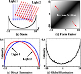
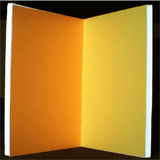
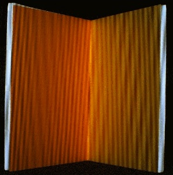
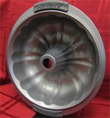
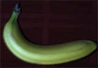
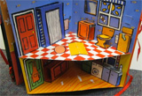
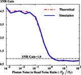
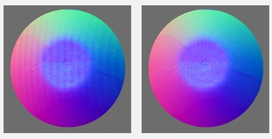
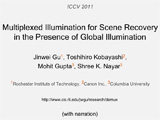

Multiplexed Illumination for Scene Recovery
in the Presence of Global Illumination |
 | |
Global illumination effects such as inter-reflections and subsurface
scattering result in systematic, and often significant errors in
scene recovery using active illumination. Recently, it was shown
that the direct and global components could be separated efficiently
for a scene illuminated with a single light source. In this paper,
we study the problem of direct-global separation for multiple light
sources. We derive a theoretical lower bound for the number of
required images, and propose a multiplexed illumination scheme. We
analyze the signal-to-noise ratio (SNR) characteristics of the
proposed illumination multiplexing method in the context of
direct-global separation. We apply our method to several scene
recovery techniques requiring multiple light sources, including
shape from shading, structured light 3D scanning, photometric
stereo, and reflectance estimation. Both simulation and experimental
results show that the proposed method can accurately recover scene
information with fewer images compared to sequentially separating
direct-global components for each light source.
This project is done in collaboration with Toshihiro Kobayashi at Canon Inc.,
Mohit Gupta, and Shree K. Nayar at Columbia
University. |
Publications
Jinwei Gu, Toshihiro Kabayashi, Mohit Gupta, and
Shree K. Nayar. Multiplexed Illumination for Scene Recovery
in the Presence of Global Illumination. ICCV 2011.
Jinwei Gu, Toshihiro Kabayashi, Mohit Gupta, and
Shree K. Nayar.Supplementary Document (with proof and other experimental
details).
|
Images
|  |
|
Simulation
of Frequency Modulated
Multiplexing:
We perform a simulation using radiosity method to
verify the accuracy of the proposed method. (a) The scene is a 2D Lambertian half circle,
illuminated by two
directional light sources. (b) The form factor matrix for the scene,
used to simulate inter-reflections with radiosity. 2x2+1=5 images (with
0.5% Gaussian additive noise) are simulated and used for
direct-global separation.
(c) The two estimated direct
components and (d) the estimated sum of the two global components
(solid lines) accurately match the ground truth
(dotted lines)
|
|  |
|
Scene Recovery for a V-groove:
Here we show the scene recovery
results for a V-groove in several applications.
(a) shape from shading (one source); (b)
intensity ratio (two sources); (c) phase
shifting (three sources); and (d) photometric
stereo (three sources). Row 1: One of the captured images
without direct-global separation.
Row 2: The separated direct component using our method.
Row 3: Recovered depth profiles. In (d), we also show the
recovered
surface normals (as needle maps) and albedo maps obtained with and
without direct-global separation.
Our method faithfully recovers scene information, while requiring
fewer images
than applying the separation method [Nayar 2006] sequentially.
|
|  |
|
Projected Light Patterns and Captured Images:
Here we show the projected
light patterns and captured images for
phase shifting on a v-groove.
(a) The amplitudes
for the three (collocated) light sources,
implemented with a low frequency (1 cycle/image width) to avoid unwrapping.
(b) We modulate the three light sources with high frequency
sinusoids shifting over time and simultaneously project the modulated light
patterns. (c) The corresponding captured input images for the
proposed method. Depth estimation results are given in
the above image.
|
|  |
|
BRDF and Surface Normal Estimation of a Shiny
Cake Mold:
In this example, we used N=9 lights to recover the BRDF
and surface normal map for a concave, shiny cake mold (shown as
inset on the top left corner). We compared three methods: no
direct-global separation, the conventional method (ie, sequential separation
with a shifting checkerboard) [Nayar, 2006], and our
proposed method. Column 1: One of the direct
components (for no separation, it is one of the captured image).
Column 2: Recovered surface normal map (color coded).
Column 3: Estimated BRDF (rendered as a sphere under
natural environment lighting). Column 4: Rendered images with the estimated BRDF and
surface normals. Column 5: Recovered depth for
the selected region (red rectangle).
|
|  |
|
Recovery of Surface Normal and Depth of a Banana:
Recovery of surface normal and depth of a banana using
photometric stereo (N=3).} (a) One of the three captured
images without direct-global separation. (b) The corresponding direct
illumination separated with the proposed method.
(c) Ground truth depth map estimated by the sequential separation with
a shifting checkerboard pattern [Nayar 2006]
(3x25=75 images). Row 2: Results without
direct-global separation --- (d) recovered normals, (e) estimated
depth map, and (f) depth error ((e)-(c)). Row 3: Results
of our proposed method (2x3+1=7 images), where (i) depth
error is (h)-(c). Without separation, there is an average of 19%
error in the recovered depth; with our method, it's only 4%.
|
|  |
|
Depth Recovery of a Room in a Pop-up Book using Phase
Shifting:
In this example, we recover the depth of a room in
a pop-up book with phase shifting (N=3). (a) The scene exhibits
strong inter-reflections. (b) The corresponding
direct component, separated with the proposed method. (c) Ground
truth depth measured by scanning a single stripe of light. (d)(e)(f)
Recovered depth maps for three methods:
no direct-global separation, the sequential separation
method [Nayar 2006], and our proposed method. (g)(h)
Depth error maps computed using the ground truth. (i) Rendering of
(f) for a different view.
|
|  |
|
Signal-to-Noise Ratio (SNR) Characteristics of the
Proposed Method:
This figure shows the SNR gain of the proposed
method with respect to the
sequential separation [Nayar 2006] for a variety of photo
noise to read noise ratios. We assume a Gaussian model for
both the photon noise and the
read noise. The x-axis is the ratio between the standard deviation
of the photon noise (sigma_p) and that of the read noise (sigma_r).
The y-axis is the SNR gain of the proposed
method with respect to the sequential
separation method. The red dot-dash line is the theoretical
result, and the blue solid line is the simulation result (for =30$
light sources). As expected, the SNR gain
is \sqrt{2N/3} if the read noise dominates, and
it reduces as the photon noise increases, approaching the asymptotic
value of 0.83.
|
|  |
|
Checkerboard vs. Sinusoid Patterns for Sequential Separation:
In [Nayar 2006], they proposed to either use three
sinusoids or use multiple shifting checkerboard (typically 25
images) for direct/global separation. Although using sinsuoids
require only 3 images per light, due to image noises and
quantization errors and imperfections in projectors, it is prone to
artifacts. Here we show an example of photometric stereo (N=3) on a concave bowl.
The separated direct illumination are shown here. The sequential
separation using sinusoid patterns needs 9 images, with noticable
vertical stripe artifacts (and also in the recovered surface normal
map). Using checkerboard patterns needs 25x3=75 images with higher
quality results. Our proposed method, using only 2x3+1=7 images,
can achieve better quality results.
|
|
Video
If you are having trouble viewing these .mp4 videos in your browser, please save them to your computer first (by right-clicking and choosing "Save Target As..."), and then open them.
|  |
|
ICCV 2011 Supplementary Video:
This video include more experimental results. (With narration, 20MB)
|
|
Slides
ICCV 2011 presentation
|
Direct/Global Separation
Multiplexed Illumination
|
|
{kind=link}
{kind=link}
{kind=link}
{kind=link}
{kind=link}
{kind=link}
{kind=link}
{kind=link}